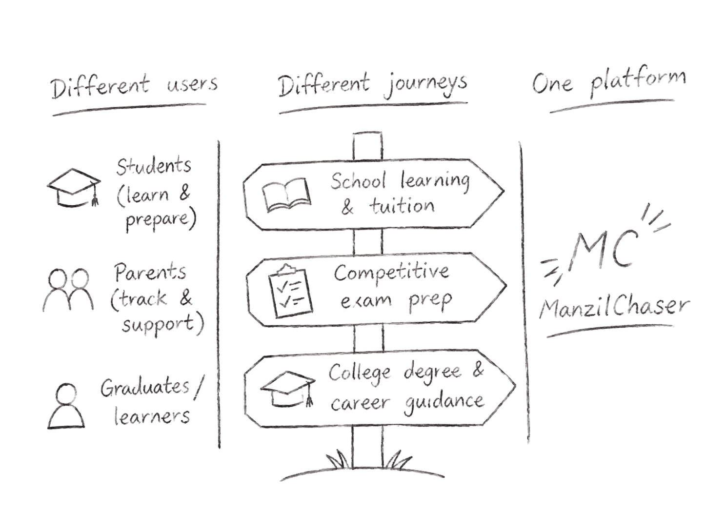
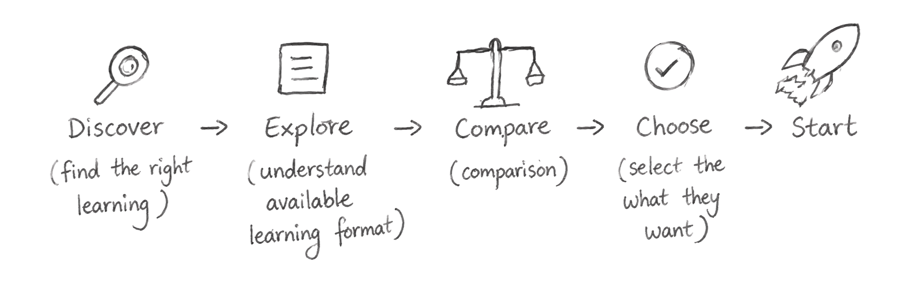
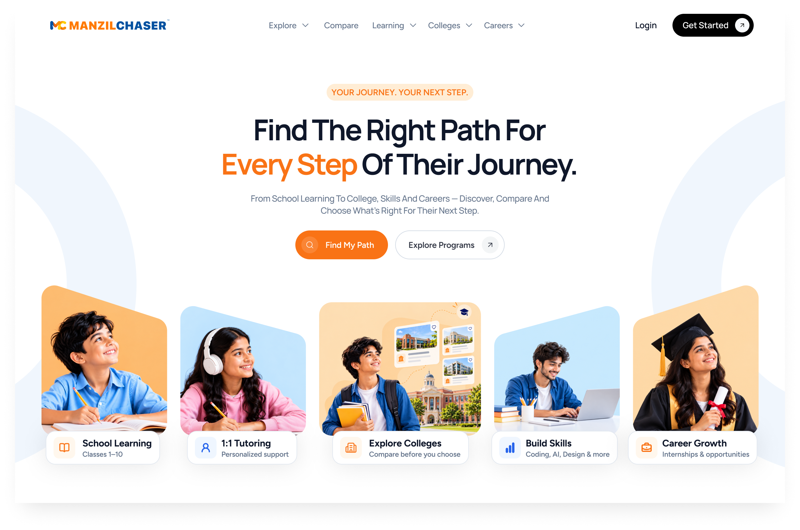

- Role
- Co-Founder & Product Designer
- Project
- Education Platform
- Focus
- Product Structure & UX/UI
The Beginning
The idea was big. The challenge was making it work as one platform.
ManzilChaser started with an idea to bring all learning services into one place.
My goal was to make it easy for everyone to find what they need.
The first challenge was understanding how to bring all the services together.

The Problem
One platform was supposed to serve people
looking for very different things.
Parents searching for tutoring needed different information from students exploring higher education. Showing every service at once could create confusion, while hiding services might make them difficult to discover.

How might we help users discover the right educational service without overwhelming them with choices?
Discovery
Before designing our platform, I studied
how other education websites guided their users.
I explored existing education and tutoring websites to understand how they organize services, present learning options, and help users compare plans.
My goal wasn't to copy their designs, but to understand their approaches and apply those learnings to ManzilChaser.


I focused on three areas:
- 01 — Navigation:
- How platforms organize different educational services.
- 02 — Service Presentation
- How they introduce and explain learning options.
- 03 — Pricing & Plan Comparison
- How they communicate pricing and differences between plans.
The Focus
Tutoring gave us a starting point.
But how should we offer it?
Introduce the four learning formats and why they needed to be understandable.

Will my child get the learning support they need?
The Parent's Perspective
Parents weren't just choosing a price.
They were choosing how their child would learn.
I mapped the parent journey to understand the questions, decisions, and information they needed before selecting a plan.

The Product Decision
I explored simpler navigation,
but the team wanted more services visible.
I proposed two design approaches to make ManzilChaser easier to explore.


What Was Different?
One showed learning options directly. The other focused on a clean look.
What the Team Wanted
The team wanted all services visible in the navigation menu.

 Selected by the team
Selected by the teamThe Final Decision
We moved forward with a detailed navigation bar while keeping the visual learning paths on the homepage.
Design Evolution
Once the structure was clearer,
I explored how the experience should look and feel.
Exploration
{{exploration}}The Outcome
From a broad education vision to a
structured website experience.
The final design brought ManzilChaser's services into a connected website, with a defined homepage, tutoring comparison, and a clear navigation structure.

Reflection
I learned that design is more than creating screens.
ManzilChaser taught me to balance user needs with business goals.
Working with the team helped me understand different ideas and make better design decisions.
My biggest learning: Good design is about solving problems, not just making things look good.